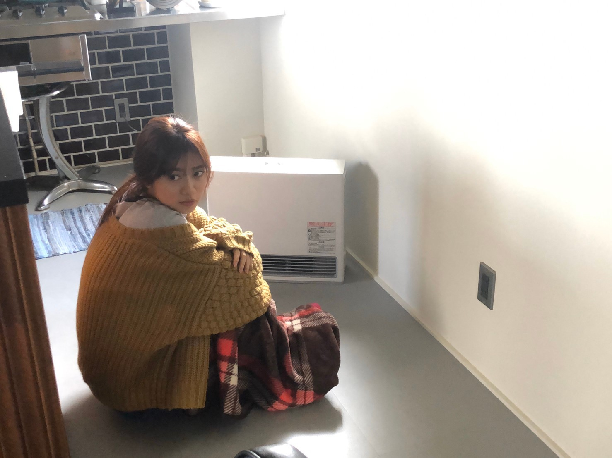
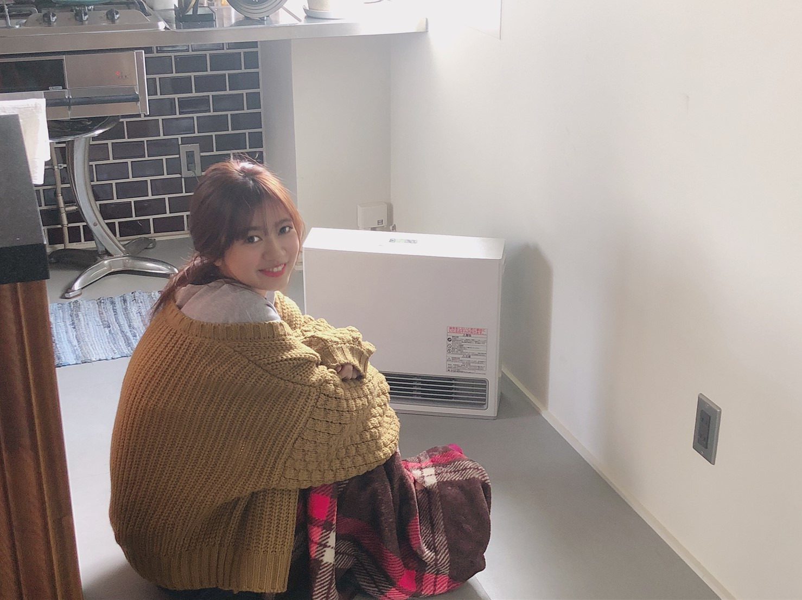

2020/0411Satオーロラソース
皆様、いかがお過ごしでしょうか
私は家のクローゼットを全力でお片付けしました！
お洋服が大好きなので
沢山ぎちぎちに詰まっていたのですが余裕のあるクローゼットにしたくていつもよりお洋服に厳しく整理整頓してきました！！
棚欲しいなーとか
色々欲が出ますが
そこもぐっと我慢して
家にあるもので工夫して
節約にもなりますからね何事もプラスに
ショッピング出来るようになったら
空いたスペースにまた、可愛い自分のときめくアイテムを沢山詰めたいです、、、！
今は外でお買い物出来るようになったらこれ買いたいなーリストを作っています。☺️
私は通販でお買い物はしなくて
ちゃんと自分の目で見て購入を決める派です。☺️
質感とか大きさとか自分の手で触れたときしっくりくるかがポイントなので
お買い物したいですね、、、
日常は日常でなく
貴方の常識は世界の常識ではないとよく、言う私ですが
皆さんも今色んな場所で改めてそれを感じることが沢山あり
そこに不安感など感じるかと思いますが
自分一人ではありません。
日常を1日も早く戻すため
皆さんも他人事だとは思わずに
お家での時間を大切にしてください！
宜しくお願い致します！！


お家ーーー
私は大好きです☺️
2020/04/11 20:30


コメント(438)
俺も蘭世に会う時は元気な姿で居たいから、おさまるまで我慢します！蘭世も体調には気をつけてね！
僕も今日収納箱が届いたので整理しました！
僕の家じゃなかなか入りきらないなーって思いました笑
こんなご時世ですが家でできることを探していきたいですね
終息した時に思いっきり遊べるように今は健康に過ごします！
僕もお家大好きですよー！
いつもありがとうございます、これからもよろしくお願いします、大好きです
UY
最後に質問でーす! 蘭世さんの得意料理は何ですか?
今は色々と大変だよね...。
だからこそいつもできないこととかやるいい機会であるって捉えられるとプラスだよね！
こうしたブログとか、モバメとか蘭世が送ってくれると自粛期間でもホントに幸せになれるよ。
ありがとうね！
次会える時に、お互い笑顔で会えたらいいな。
いつもありがとう
またコメントするわ！
蘭世すきよ～
お家大好きなのわかりますよー!!
蘭世のメールなどで何とか元気を保ててるよ！感謝！
普段の日常に早く戻れるように周りに気をつけよう！
えいえいおー！
クローゼットのお片づけいいね！蘭世ちゃんのときめくアイテムぜひ今度見せて〜(^ ^)
私も週末、部屋の掃除しようと思ってたのにまだしてない…！明日しなきゃ！
買いたいなーリストいいね！私も今の状況が落ち着いたらやりたいことリストつくろうかな。でも一番は蘭世ちゃんと会ってお話したい！今日本当は蘭世ちゃんと握手だったのになぁ…と何度も悲しくなってしまって…。でも、みんなの健康が大事！今はみんなで協力しなきゃです。
わかったよー！おうちでの時間を大事に…蘭世ちゃん見て元気に過ごすよ！蘭世ちゃんは私の心の薬なんです！
お互い気をつけて過ごそうね！
俺も家の掃除しようかな、
手伝って欲しいわ笑笑
体調気をつけてね！！
次のブログも楽しみにしてます！
なかなか外にも出られなくなってきたこのご時世だからこそ、自分の身近な存在に目を向けてみるのはすごくいい事だよね！
また新たな発見があるかもだから笑
俺も早く出かけたいけど、今一度普段何気なく暮らしてる部屋の整理整頓俺もやってみるね！
気持ちも整理整頓される気がするよね！(？)
早くあなたに会いたいです
会える時が来たらたくさんお話しようね！
握手会もしばらく無くなっちゃったから直接お話できなくて寂しいです
クヨクヨしててもしょうがないのでブログ読み返したり、前にオススメしてもらったアニメ見たりしてます！
公務員試験の勉強できる時間も確保出来てるので頑張ります！！
試験前に握手会で話聞いてもらいたかったけど離れてても遠くからパワー送っておいてください！！笑
最近は漫画読んだりもしてて、ドメスティックな彼女と五等分の花嫁を読みました！
五等分の花嫁は4週目くらいです笑
蘭世に五等分の花嫁好きって話したら、好きそー！笑
って言われたのが懐かしい笑
ちなみに二乃推しです！！
あと、HoneyWorksさんにもハマってます！！
センパイ。って曲が最高に好きです！
雨宮天さんにハマりそうです
またコメントするね！
蘭世が一番大好きです！
アディオス!!( -`ω-)b
蘭世ちゃんが更新するよって言ってから待ってた！笑
蘭世ちゃん掃除してるんだ！偉い！
私も服はネットじゃなくてちゃんとお店に行って買います！
なんかサイズとか合わなかったら不安なので笑
買いたいなーリストか。可愛い！ひたすら可愛い！
早く自由に外に出たいね
そのためには家で過ごすことですね！蘭世ちゃんにお家での時間大切にって言われたらお家時間大切にするよ！蘭世ちゃん！
蘭世ちゃん体調には気をつけてください！
部屋の整理整頓ってこういう外出を自粛してるときだからこそ、より時間をかけてできるし良い機会だよね。
世間が落ち着いて安心して買い物ができるようになったら、蘭世が買った服、ぜひお披露目してくださいね！楽しみにしてます！
日常が元に戻るまで、不安で不安でしょうがないときもあるけれど、蘭世がこうやって前向きなブログやハッピーなモバメを届けてくれるから元気もらえてます。
いつか直接お礼を言いたい！握手会が実施できるようになったら感謝を伝えさせてください。
お互い変わらずがんばろうね！応援してます。
僕も通販あんましないです
体に気をつけて！！
しっかりとバイト以外は家で自粛してますよ〜
ちなみにブログ更新された今はドリームマッチ見てます！
自粛期間にモバメも沢山送ってくれてありがたい限り
お互いにコロナにかからないように気をつけましょう〜
次逢えるのいつになるかなぁ
僕も目で見て買う派です！
おうち時間を楽しんでいきましょう！
またブログ楽しみにしてますね(^^)
自分事ですが名乗る名前を変えたいと思います
ちっぷ⇒ユースケ にしたいと思います。
理由は特にありません！
今後のイベントはこの名前で名札つけて行くので
よろしくお願いします
体調にはくれぐれもお気を付けて
不要不急な外出はできるだけないようにしよう！
自分も大学はオンラインになって
出る用事もないので
ほとんど家にいます
みんなで頑張ろう！
ユースケ
寺田さんは、直接お買い物に行く派なのですね◎
買いたいなーリスト、めちゃくちゃ良きです
わたしはもうもっぱらネットショッピング派で
ポンポン買ってしまうから
ほんとにいるのか分からないものまで
買ってしまうことがあって
寺田さんのお話聞いて
そういう風にしていこうかな〜って
思いました☺️
私もお洋服が大好きで
買ったお洋服を着て、寺田さんに会いに行くのが
私の楽しみの一つでもあって
寺田さんの私服を見るのも
私の楽しみであり、幸せの一つです
そして褒められた時、ほんとに嬉しいです☺️
またお洋服の話とかもしたいな…
そういえば、寺田さんとお揃いにした
お洋服があります！
またそれも着て、いつの日か会いに行くのが
今の目標です
私もお家大好きです
明日明後日はやっとお仕事が休みなので
ゆっくり休みます
それではまた！
好きぴ
ゆうき(ゆっちゃん)
僕も自分で見て買う派です！
蘭世さんと一緒に買い物行きたいですー！！
ボクも片付け無ければ…
気をつけてちゃんと自宅で過ごそうと思います！
今日握手会あってたら会いに行けてたけど今は我慢。
安心して外に出られるようになって握手会も行われるようになったらまた会いたいな。
でもブログとかメールで蘭世ちゃんが元気にしてる様子が分かって嬉しいよ。
ありがとう。
健康に過ごしましょう。
世の中が落ち着いて健康な状態で会える日まで待ってます。
いろいろと厳しい世の中ですが、お元気そうでなによりです。
私も基本的に家に居る時間が長くなっているので、これを機に掃除をせねば……とは思いつつ、ついほかのことをやってしまいがち。
部屋を過ごしやすい環境にすれば、より快適におうち時間を過ごせますよね。
お買い物、しっかり実物を見たいというのは、なんとなく蘭世さんらしいなと思いました。通販だと後悔することもありますからね。
オーロラソースはサラダやフライに合うみたいですね。自炊する機会も増えているのだ、今度試してみます。
コロナが１日でも早く落ち着いて
欲しいね。
乃木坂46のライブも
握手会も出来なく寂しい。
買いたいなリスト、色々あるね。
掃除は面倒だけど、新たな発見もあって
楽しい。
頑張って行きましょ(o´∀｀)o
いつもラジオとか出る時は毎回聴かせてもらっているのですがもうちょっと声を大きめにしてくれると嬉しいなと思います！あと、蘭世さんから趣味とかあまり聞いたことない気がするのでなにか趣味を見つけてくれると応援してる側として嬉しいです！蘭世の勢い止まらんぜ！センター待ってますいつまでも！
クローゼット整理したんですね！僕はまだ寒いので冬服出したままなのですが、蘭世さんのマネして僕も冬服しまって春服出しますね！
通販ではなく、ちゃんとお店でものを見てから買う派なの蘭世さんらしいですね！
蘭世さんを見習って、僕も通販に頼るの控えます。
いつもありがとうございます。
学校がなくてひましてます…勉強しないとです
握手会なくて残念です
気をつけて生活します！長文失礼いたしやした！
りゅう
最近は家で過ごさざるを得ない状況ですが、我々一人一人の意識で早くこの事態を収束させましょう！！
ともに頑張りましょう
家で大人しくゲームをする毎日ですよ
しっかり家にいます！
体調に気をつけて頑張ってください！
会いたい
今日も仕事だったよ。
蘭世のブログとモバメに元気と癒しをたくさんもらってます！
いつもありがとう！体に気をつけて！
コロナ大丈夫？？
蘭世に会いたすぎて握手楽しみすぎる。。
コロナ早く収まりますように
まってぃん（りょうた）より
コロナで世界は大変だけど、家で整理整頓などしてゆっくり過ごしてるようでよかった！
服多くなるのすごく分かる！俺も服は好きなのであれやこらやと買うと今まである服も大事にしなきゃと思って結局増えるよね。笑
落ち着いた頃にショッピング行けるといいね！
レアなお家の写真ありがとう！この部分だけでも清潔感が見える。笑
油断が許せない時期だけど頑張ってください！
ちょっとした名言集
「できること」が増えるより、「楽しめること」が増えるのが、いい人生。
斎藤茂太
元気ですかい？(^^)
こんな状況だからこそ
色んな物や人の有り難みが重々と。。
いつかまた会えるその日まで！
踏ん張りましょうね〜(๑˃̵ᴗ˂̵)
僕もネットより目で見て買う派です
休日は掃除しちゃうよね
こんまりさんのときめき術で整理整頓してます！
コロナ怖いですね
一人一人ができることを着実に忍耐強くやるだけですね
頑張りましょう
えいえいおー
ブログ更新ありがとう(^^)
最近は家で過ごしてゆっくりする時間が増えたから蘭世の過去のブログとかモバメとかたくさん読み返したよ！
コロナの影響で握手が延期になって次いつ会えるかわからないけど、次会える時まで、料理の勉強を頑張るね！今は、料理の検定の勉強と包丁使いの勉強を家出しています。次の握手でその報告できるようにがんばる〜(^-^)
あいらもお家だいすき。！
体調には気をつけてね。いつもありがとう！次会える時を楽しみにしてる！だいすきです。(^^)
自分もおうち時間が増えたので部屋の整理をしました。懐かしいものがあったりして捨てるのが心苦しいのもちらほらありましたが片付いたらとてもスッキリしました！
断捨離もたまにはいいですね！
早く会える機会ができたらいいな
体調に気をつけてください！
自分もお家大好き
やぁ(｡･ω･)ﾉﾞ最愛なる蘭世
ブログ更新ありがとう！
オーロラソース美味しいよな！
エビカツとか白身魚のフライトとかにかけるとなお美味しい
おお！クローゼットの整理か
蘭世
俺は今外に雨除けを作ろうか悩み中。
材料はあるんだけどな。
どういう風に作ろうか悩んでる。
買い物か～したいな～。
俺もネットで買うのは見て知ってるのだけ。
自分の目でまずは見ないと嫌。
買い物リスト一緒に作りたいな笑笑
常識てのはある一定のラインは社会的にこれだよって決まってる気もするけど、それが正しいかって言うとそうじゃない。
世界が違えば常識も違うしな。
日々の日常も何かが起こればそれも簡単に崩れてしまう。
だから今を大事にして未来につなげないとな。
この家にいる時間色々考えさせられる。
この写真もまた良いな～
家にかえったらこういう風にヒーターの前でお帰りって待ってくれてたら最高の人生や。
俺も家にいるのは好き。
でもな…家のプリンター壊れたからちょっとブルー
励ましておくれ…
ってこのブログで元気出てるけど
それじゃきっとまた後で(｡･ω･)ﾉﾞ
今はおうち時間を豊かにするときだね◎
分かります、僕も服は極力ネットで買わないかな。
サイズ感、素材感、自分で見て決めるからこそ
愛着湧く。
おしゃれイズムみたいに
「蘭世のクローゼット公開」
やってほしい
月刊エンタメ！
1枚目、からの2枚目ね。
うんうん、分かります(◜௰◝)
家で大人しくしてます。
お片付けするいい機会かもしれないですね。
僕は割と通販使っちゃうのですが
自分で選んで買うのはいいですよね(*´▽｀*)
早く普通の日常が送れるように
今自分が出来ることをしたいと思います。
コメントする